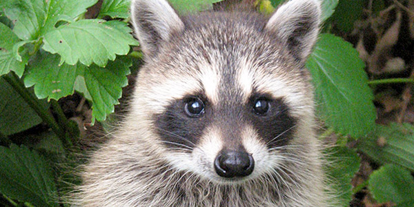
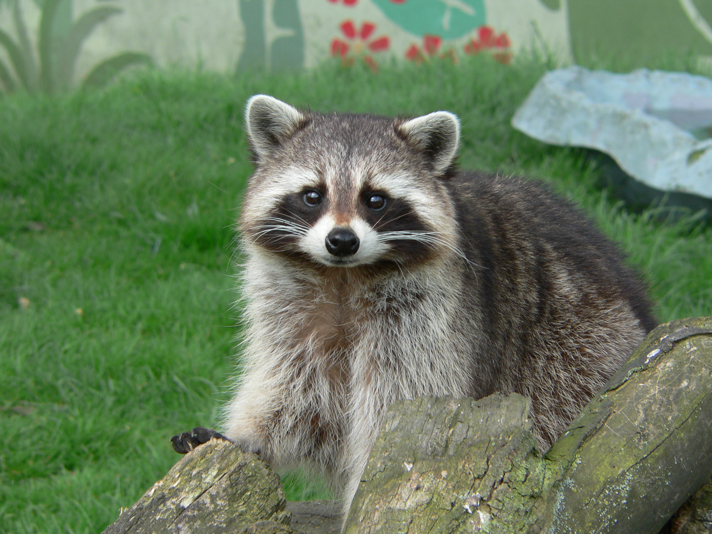

Available for Adoption

Kevin Recently Adopted
Age: Approx. 2 years
Personality: Highly curious, emotionally intuitive, excellent problem solver
Notes: Opens cabinets, prefers grapes, makes prolonged eye contact

Mabel
Age: 1 year
Personality: Shy but mischievous
Notes: Enjoys stealing shiny objects
Apply to Adopt Mabel
Adoption Application
About Our Program
Urban Wildlife Rescue provides rehabilitation services for displaced raccoons and carefully matches them with experienced adopters. Our raccoons are known for their intelligence, dexterity, and strong personalities.
Adoption Requirements
- No HOA restrictions (or willingness to keep things quiet)
- Secure cabinets and locking trash bins
- Comfort with nocturnal activity
- Access to a vet willing to "ask fewer questions"
FAQ
Are raccoons good pets?
They are complex companions best suited for patient, flexible households.
Will they damage my home?
We recommend child locks. Everywhere.
Do they get attached?
Yes. Sometimes immediately.